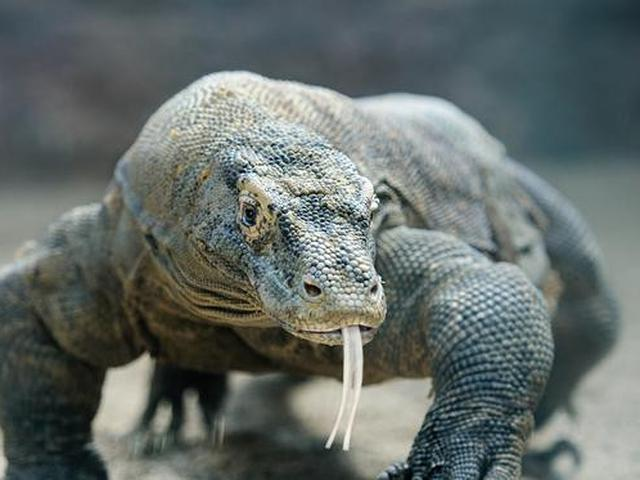

Beruang adalah salah satu jenis karnivor yang paling terkenal di dunia. Yang paling khas dari mereka tentu adalah ukurannya yang besar. Mereka juga terkenal kuat dan ganas, tapi bayinya memiliki penampilan yang imut dan disenangi banyak orang. Jumlah spesies beruang yang ada saat ini adalah delapan spesies. Mungkin kamu bisa menyebutkan beberapa spesies di antaranya. Tapi ada beberapa fakta unik tenang beruang yang gak semua orang tahu. Ini dia delapan fakta di antaranya.

Panjang harimau dewasa bisa mencapai 11 kaki atau sekitar 335 sentimeter. Di samping itu, harimau adalah salah satu hewan dengan ingatan paling tajam, lebih tajam dari manusia. Penglihatannya juga tajam, 30 kali lebih tajam dari penglihatan manusia di malam hari. Insting predatornya dilengkapi dengan kecepatan berlari hingga 60 km/jam, serta kemampuan melompat sejauh 6 meter dengan tinggi 5 meter. Si belang ini adalah perenang paling andal di antara kucing-kucing lainnya. Senjatanya adalah cakar yang mampu mengoyak tengkorak beruang hanya dengan satu sabetan saja.
Komodo memiliki lidah yang panjang, berwarna kuning dan bercabang. Komodo jantan ukurannya lebih besar dari pada betina. Dengan warna kulit dari abu-abu gelap hingga merah, sesaat komodo betina memiliki warna lebih hijau. Komodo muda lebih berwarna kuning, hijau dan putih pada latar belakang hitam. Komodo akan menggali lubang sedalam sembilan meter untuk menyimpan telur. Telur komodo itu akan menetas pada bulan April atau Mei dan komodi mudah akan hidup di pohon beberapa bulan untu menghindari predator atau komodo yang lebih tua. Komodo termasuk hewan karnivora atau pemakan daging, seperti babi, kerbau, rusa, atau kuda. Bahkan komodo kadang-kadang menjadi kanibal. Komodo memakan spesiesnya sendiri atau sesama komodo yang biasanya lebih muda.